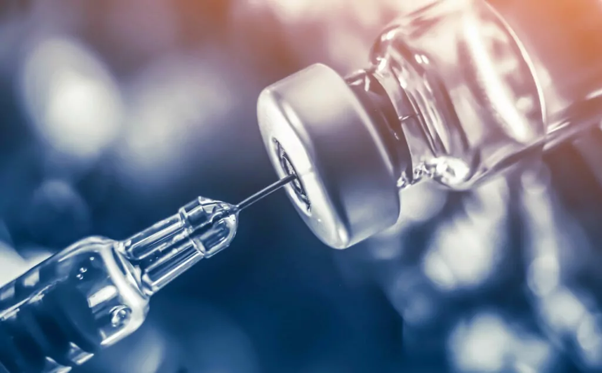
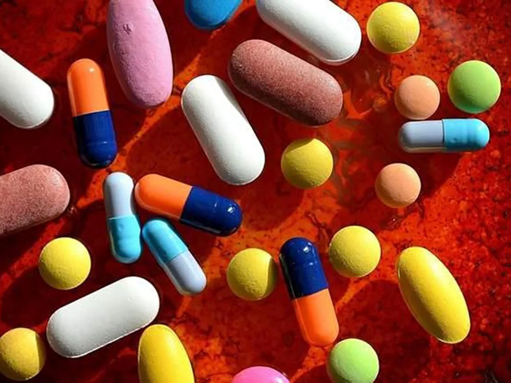
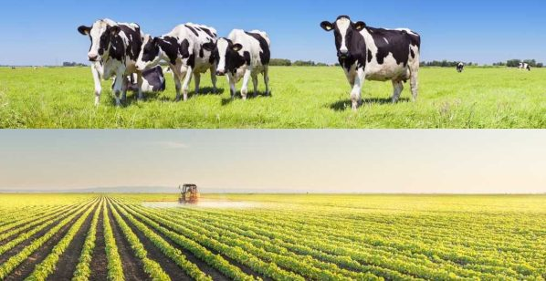
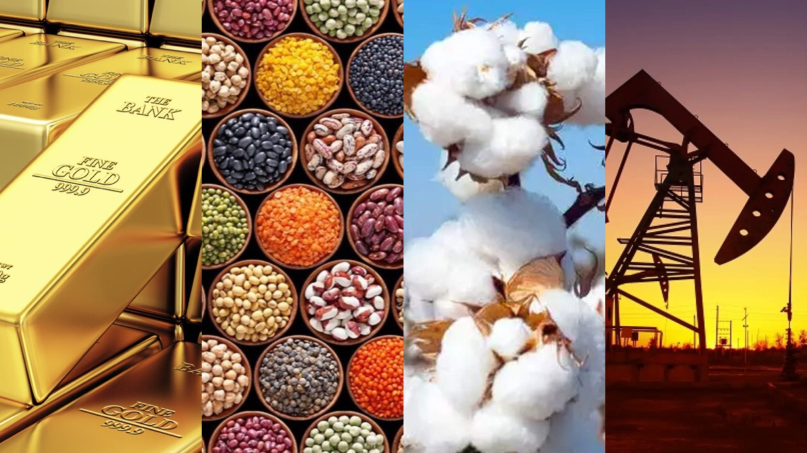

¿QUE ES LA BIOTECNOLOGIA?
Llevamos la biotecnología literalmente en los genes y, aun así, no
deja de sorprendernos con sus continuas innovaciones, casi más propias de
la ciencia ficción. El espíritu revolucionario de aquellos avances anteriores
a la creación del término como la fermentación del pan, el queso o el vino se
ha mantenido intacto hasta hoy, más de 6.000 años después, justo cuando el ser
humano se pregunta dónde estará el techo, si es que lo hay, de esta tecnología
que podría llevarnos muy lejos el día de mañana.
La biotecnología utiliza células vivas para desarrollar o manipular
productos con fines específicos, como por ejemplo los alimentos transgénicos.
La biotecnología está así vinculada con la ingeniería genética y surgió como
disciplina a principios del siglo XX en la industria alimentaria, a la que
después se sumaron otros sectores como la medicina o el medio ambiente.
Hoy, las cinco ramas en las que se divide la biotecnología moderna humana, ambiental, industrial, animal y vegetal nos ayudan a combatir el hambre y las enfermedades, producir de forma más segura, limpia y eficiente, reducir nuestra huella ecológica y ahorrar energía. El aumento en la inversión y en el empleo en este sector ha sido exponencial en los últimos años, reflejando su creciente impacto económico y su importancia en el desarrollo sostenible y la innovación tecnológica a nivel global.
USOS Y APLICACIONES
El ingeniero agrónomo húngaro Karl Ereky, él quien adopto el término biotecnología para describir esa fusión de la biología con la tecnología, describe en una frase la importancia de la biotecnologia en nuestra vida cotidiana.
"Construir un nuevo organismo es más fácil que fabricar un Blackberry".
La biotecnologia a llegado para quedarse, con sus diveros impactos en
la sociedad, contribuyendo con la evolucion del mundo y su manera de ejercer
sus activiaddes, cada vez demostrando que la ciencia y las tecnologia son los
mejoes aliados de la innovacion. Estas son algunas de las aplicaciones mas
relevanes de la biotecnologia en la actualidad:
La aplicación de la biotecnología y la microbiología se enfoca especialmente en células procariotas o eucariotas, enzimas y proteínas relevantes, genética aplicada y biotecnología molecular, genómica y proteómica, fisiología microbiana y celular aplicada, biotecnología ambiental, procesos, productos y más.
MEDICINA
El desarrollo de la insulina, la hormona del crecimiento, la identidad y el diagnóstico molecular, las terapias génicas y vacunas como la de la hepatitis B son algunos de los hitos de la biotecnología y su alianza con la ingeniería genética. Además, también se utiliza en el diagnóstico de enfermedades debido a su capacidad para hacer pruebas muy complicadas en un tiempo y coste menor.

Biosanitaria: para obtener fármacos, diagnosticar enfermedades, vacunas y terapias celulares, identidad molecular.
ALIMENTOS
Además de los alimentos transgénicos que mencionamos anteriormente, gracias a la tecnología biológica se han creado productos como el maíz WEMA, un tipo de cultivo resistente a las sequías y a ciertos insectos que puede ser fundamental para luchar contra el hambre en África.


INDUSTRIA
La revolución de los nuevos materiales inteligentes de la mano de
la biotecnología no ha hecho más que empezar, con la principal ventaja de
que puede realizar productos fácilmente degradables.
Productos así ayudan al medioambiente debido a que generan menos desechos en
el momento de su destrucción, como es el caso de los plásticos biodegradables.
